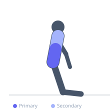

Exercise guide / Standing Ab Wheel Rollout
Standing Ab Wheel Rollout
The standing ab wheel rollout is an advanced progression of the kneeling rollout that starts with the athlete fully upright, dramatically increasing the moment arm at the shoulder and hip. The exercise demands elite levels of anti-extension core stiffness, shoulder stability, and lat engagement to prevent collapse of the lumbar spine as the wheel rolls forward. It represents one of the highest anti-extension challenges achievable with minimal equipment and should only be attempted after mastering the kneeling variation.
Primary muscles
transverse abdominis
rectus abdominis
Secondary muscles
latissimus dorsi
erector spinae
internal oblique
Stabilizers
deltoid anterior
triceps long head
Equipment
Ab Wheel (Ab Roller)


Starting position
- Stand upright holding the ab wheel handles with both hands, wheel on the floor just in front of the feet.
Setup
- Only attempt after achieving 15+ controlled kneeling rollouts with full range of motion. Use a non-slip surface.
Steps
- Step 1: Brace the core maximally. Begin to roll the wheel forward while simultaneously hinging at the hips.
- Step 2: Lower the torso toward the floor under strict anti-extension control — do not allow the lumbar spine to hyperextend.
- Step 3: Extend forward as far as can be controlled — ideally until the body is nearly horizontal.
- Step 4: Pull the wheel back toward the feet by engaging the lats and abs simultaneously, returning to upright.
- Step 5: Maintain a hollow-body position throughout — ribs down, pelvis neutral.
Coaching cues
- Ribs to hips — hollow position always
- Pull the floor toward you on the way back
Breathing
- Inhale and brace before rolling out. Exhale sharply on the return.
Range of motion
- Roll out as far as can be controlled without lumbar collapse. Full return to standing upright.
Tempo
- 3-1-3-0. Each repetition should be fully deliberate and controlled.
Common mistakes
- Lumbar hyperextension at the bottom — indicates insufficient core strength for this variation
- Failing to engage the lats on the return — the pullback is lat-driven, not just abs
Safety
- Stop immediately if lower-back pain occurs — regress to kneeling rollout
Training
- strength: 3–8 reps
- strength: 3–5 sets
- Rest: {'strength': 120}